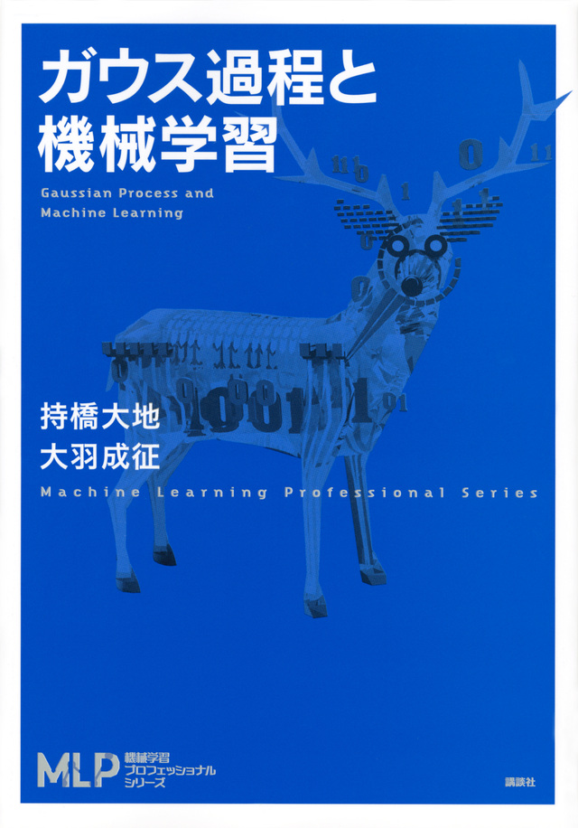
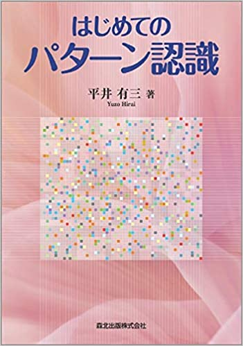
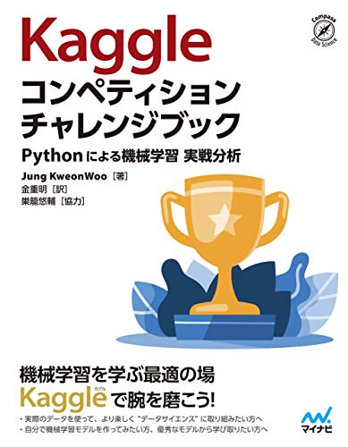
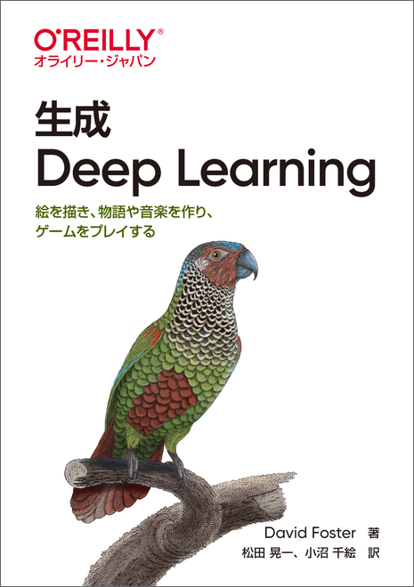
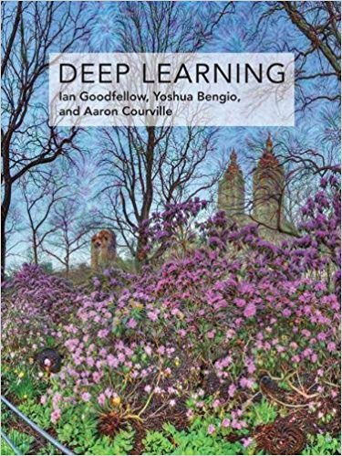
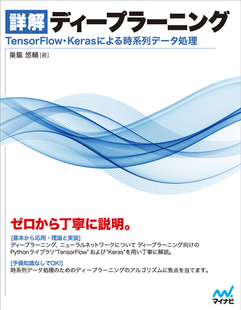

- 2023.11.22-23
-
京都大学の11月祭に出展し、会誌の販売とAIデモの展示を行いました。
- 2023.10.12
-
「IT Text 自然言語処理の基礎」の勉強会を開始しました。

- 2023.10.5
-
「Pythonで学ぶ音声認識」の勉強会を開始しました。

- 2023.9.4
-
「"Why Should I Trust You?" Explaining the Predictions of Any Classifier」の論文読み会を実施しました。
- 2023.7.10
-
「Emerging Properties in Self-Supervised Vision Transformers」の論文読み会を実施しました。
- 2023.7.6
- 「統計的因果推論の理論と実装」を読了しました。
- 2023.6.26
-
「The Foward-Forward Algorithm: Some Preliminary Investigations」の論文読み会を実施しました。
- 2023.6.22
-
「ゼロから作るDeep Learning」を読了しました。
- 2023.6.19
-
「Deep Clustering for Unsupervised Learning of Visual Features」の論文読み会を実施しました。
- 2023.5.29
-
「Pre-training without Natural Images」の論文読み会を実施しました。
- 2023.5.11
-
「ゼロから作るDeep Learning」の勉強会を開始しました。

- 2023.5.4
-
機械学習コンペ初心者を対象に、ハンズオンを行いました。SIGNATEの練習問題「お弁当の需要予測」を題材に、コンペの全体的な流れや精度を上げるテクニックを解説しました。
- 2023.4.27
-
「統計的因果推論の理論と実装」の勉強会を開始しました。

- 2023.4.14
-
「SIGNATE Student Cup 2023」のイベントアンバサダーとしてKaiRAが協力することになりました。
プレスリリースはこちら。
- 2023.3.25
-
大坂城野外音楽堂にて開催されたハンゲキフェスの学生団体イベントで、KaiRAが登壇しました。
- 2023.3.9
-
「第1回AIハッカソン」の発表会を実施しました。5人の開発者が各々自由なテーマでAIを制作しました。
- 2023.1.12
-
「ゼロから作るDeep Learning 4」を読了しました。
- 2022.12.2
-
「ガウス過程と機械学習」を読了しました。
- 2022.11.5
-
MBS毎日放送にて開催されたMonsters×Eggsに、KaiRAが登壇しました。
- 2022.10.13
-
「ゼロから作るDeep Learning 4」の勉強会を開始しました。
- 2022.10.5
-
「ガウス過程と機械学習」の勉強会を開始しました。

- 2022.9.5
-
株式会社スクラムサイン様とスポンサー契約を締結しました。
プレスリリースはこちら。
- 2022.9.1
-
「しっかり学ぶ数理最適化」の勉強会を開始しました。
- 2022.8.27
-
Transformer/ViT/gMLP/PoolFormer論文読み会を行いました。
- 2022.6.30
-
「ゼロから作るDeep Learning」を読了しました。
- 2022.4.20
-
「ゼロから作るDeep Learning」「深層学習 改訂2版」の輪読を開始しました。
- 2022.1.20
-
「はじめてのパターン認識」を読了しました。
- 2021.11.17
-
論文読み会を開始しました。
- 2021.10.7
-
「はじめてのパターン認識」の輪読を開始しました。

- 2021.8.25
-
「Kaggleコンペティション チャレンジブック」を読了しました。
- 2021.7.6
-
「パターン認識と機械学習 上」を4章前半(4.1節)まで読了し、一度輪読会を中止しました。
- 2021.6.24
-
「つくりながら学ぶ!深層強化学習 Pytorchによる実践プログラミング」を読了しました。
- 2021.5.12
-
「Kaggleコンペティション チャレンジブック」の輪読を開始しました。

- 2021.5.6
-
「つくりながら学ぶ!深層強化学習 Pytorchによる実践プログラミング」の輪読と、新入生向けに「ゼロから作るDeepLearning」の輪読を開始しました。
- 2021.5.4
-
「パターン認識と機械学習 上」の輪読を開始しました。
- 2021.1.7
-
「生成 Deep Learning ― 絵を描き、物語や音楽を作り、ゲームをプレイする」を読了しました。
- 2020.11.5
-
「生成 Deep Learning ― 絵を描き、物語や音楽を作り、ゲームをプレイする」の輪読を開始しました。

- 2020.10.22
-
「つくりながら学ぶ! PyTorchによる発展ディープラーニンング」を読了しました。
- 2020.5.7
-
「つくりながら学ぶ! PyTorchによる発展ディープラーニンング」の輪読会と新入生向け輪読会を開始しました。 新型コロナウイルス感染症による影響を考慮し、2020年度の活動は新入生歓迎会を含め、全てオンラインで行いました。
- 2020.1.16
-
「ゼロから作るDeep Learning ②」の輪読会を終了しました。
- 2019.11.23-24
-
京都大学の11月祭に出展しました。
- 2019.10.3
-
「ゼロから作るDeep Learning ②」の輪読会とフリー枠形式の発表を開始しました。
- 2019.7.11
-
「Pythonで学ぶ強化学習 入門から実践まで」を読了しました。
- 2019.4.25
-
「Pythonで学ぶ強化学習 入門から実践まで」の輪読会と新入生向け輪読会を開始しました。
- 2019.5.17
-
新入生歓迎会を開催しました。
- 2019.2.1
-
種石先生がNVIDIA社のDLI University Ambassadorに選ばれました。
- 2018.12.8
-
「DeepLearning（日本語版）」の輪読を開始しました。

- 2018.11.30
-
「詳解ディープラーニング」を読破しました。
- 2018.11.23-26
-
京都大学の11月祭に出展しました。
- 2018.7.6
-
「詳解ディープラーニング」の輪読を開始しました。

- 2018.6.29
-
「ゼロから作るDeepLearning」を読破しました。
- 2018.4.20
-
「ゼロから作るDeepLearning」の輪読を開始しました。
- 2018.4.10
-
新歓説明会を実施しました。
宣伝の甲斐があってか、この週でメンバーが30名を突破しました。
- 2018.4.4
-
新入生を相手に、初めてビラまきをしました。
同時にツイッターでKaiRAの宣伝に努めました。
- 2018.3.16
-
KaiRAを設立しました。
学生メンバーが1人しか居なかったので、ビラ作成などにとりかかりました。